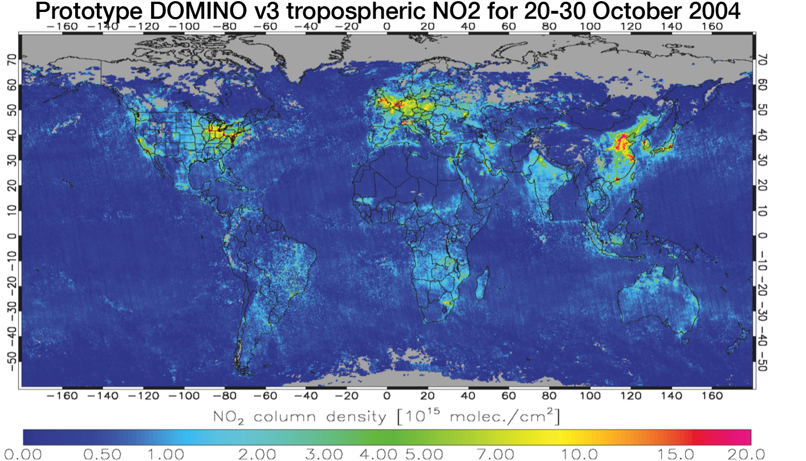

Most of my previous projects focused on nitrogen oxides (NOx). NOx mainly originates from fossil fuel combustion, is a precursor of tropospheric ozone and has an important role in aerosol formation. For my bachelor thesis, I worked with Geert Vinken & Folkert Boersma on examining NO2 from space. One of the key elements was identifying ship tracks using NO2 observed by the OMI satellite instrument. Shipping emissions are especially high as ships use low-grade bunker fuel. The figure on the right shows ship tracks around the European continent made visible by using a high-pass filter on OMI NO2 columns.
NO2 tracks around Europe visualized using a high-pass filter
Annual soil NOx emissions in our updated parameterization
During my M.Sc. I did an internship at Harvard University (Working with Folkert Boersma, Geert Vinken, and Daniel Jacob), working on soil NOx emissions. Nitrogen oxides are emitted from soils as a by-product of microbial nitrification and denitrification. Emissions are enhanced by the use of fertilizer. We worked on improving a parameterization of these emissions in GEOS-Chem. GEOS-Chem is a chemical transport model which allows us to model global 3D concentrations of atmospheric gases. The figure on the left shows annual average emissions as implemented in the model. We also carried out an initial evaluation of the emissions using OMI NO2 observations.
Between summer 2012 and spring 2013 I worked on my M.Sc. thesis at the Royal Dutch Metrological Institute (KNMI) under the supervision of Folkert Boersma. We worked on a new version of the retrieval of tropospheric NO2 columns from the Ozone Monitoring Instrument: DOMINO v3. Our updates include coupling with a newer, higher resolution chemical transport model (TM5) for a better representation of the atmosphere and vertical; improved representation of surface height and cloud pressure; and updated error characterization.

NO2 from OMI for 20-30 October 2004 using our prototype retrieval